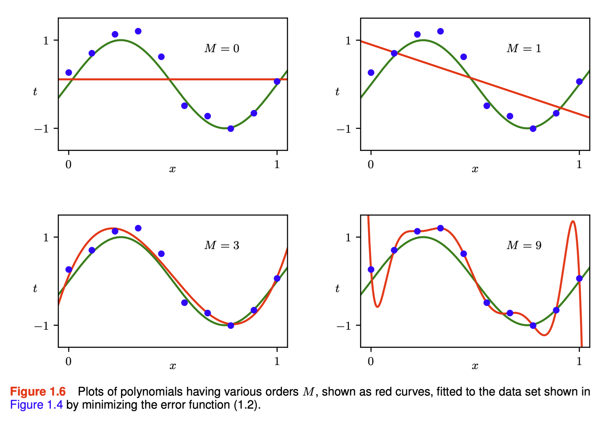
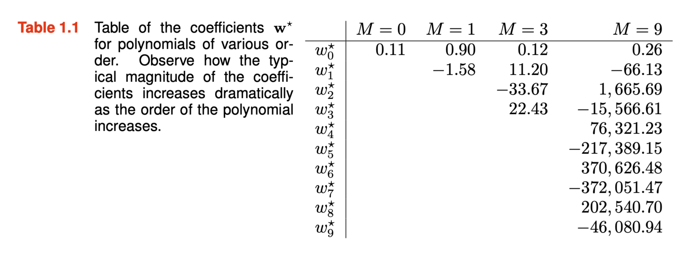
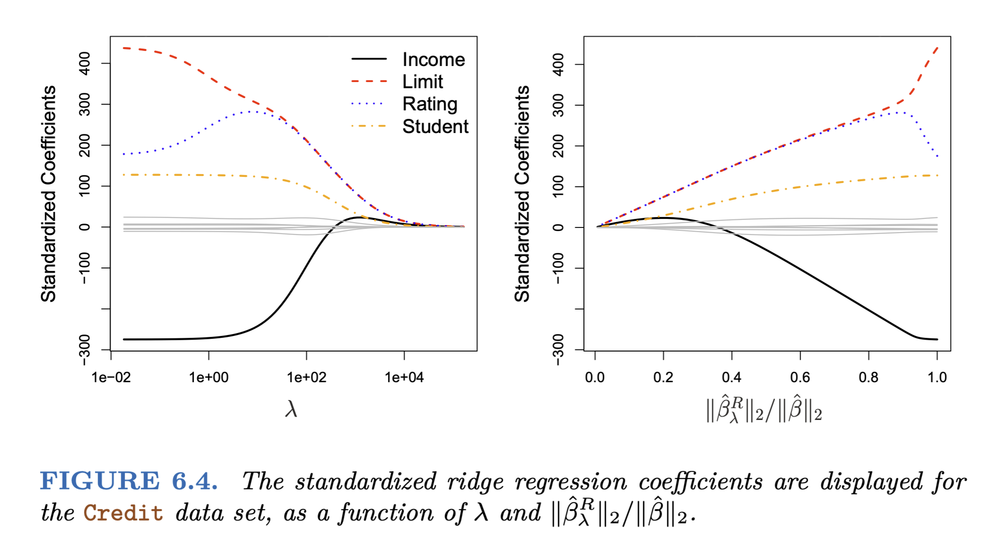
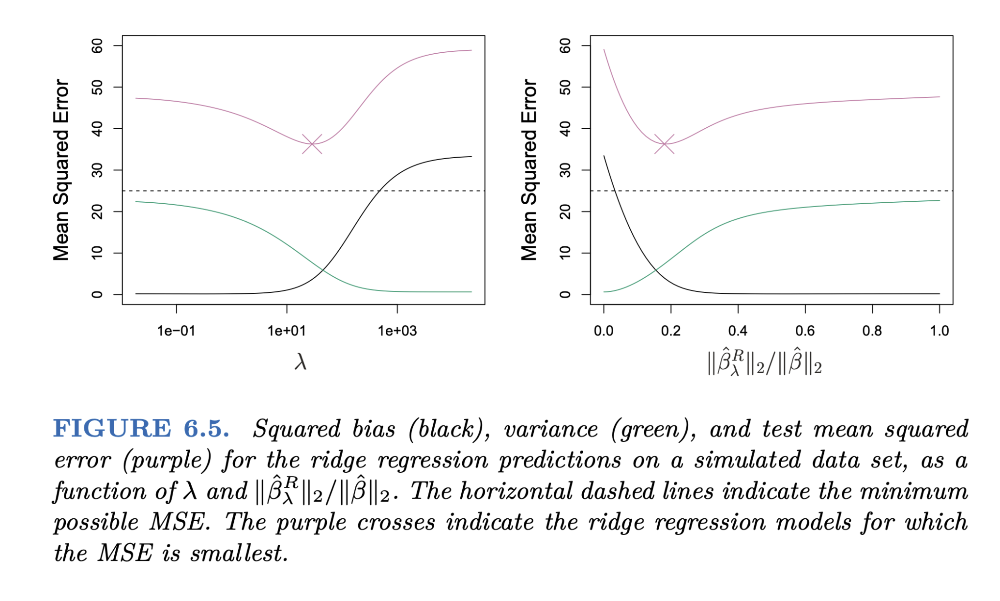
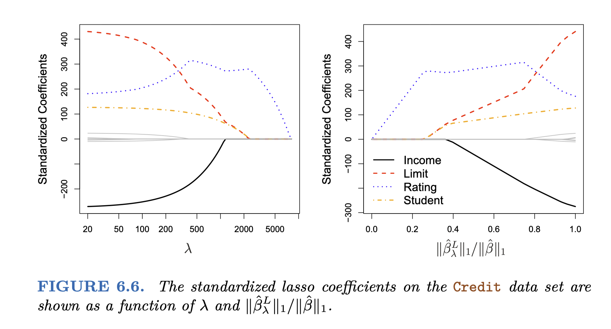
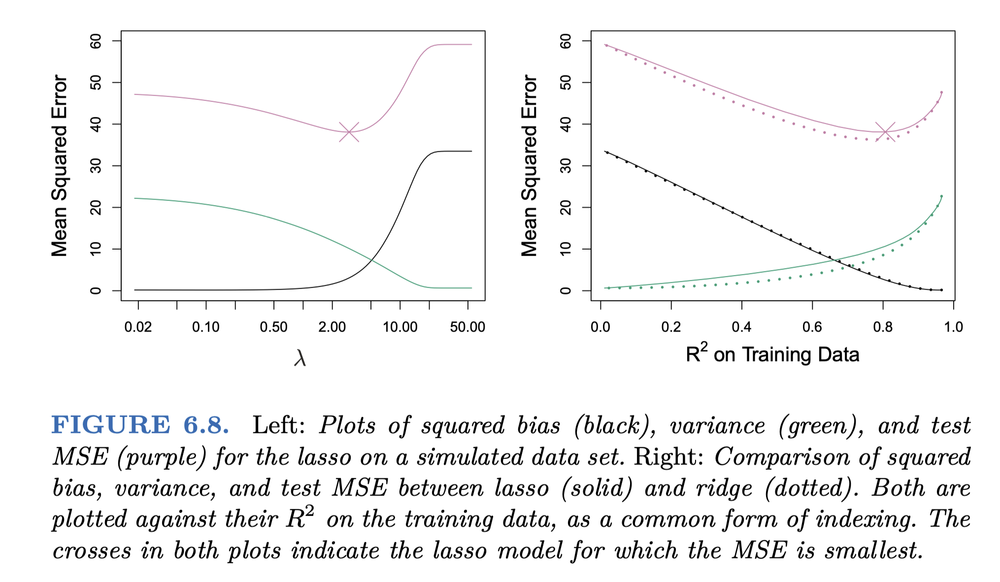
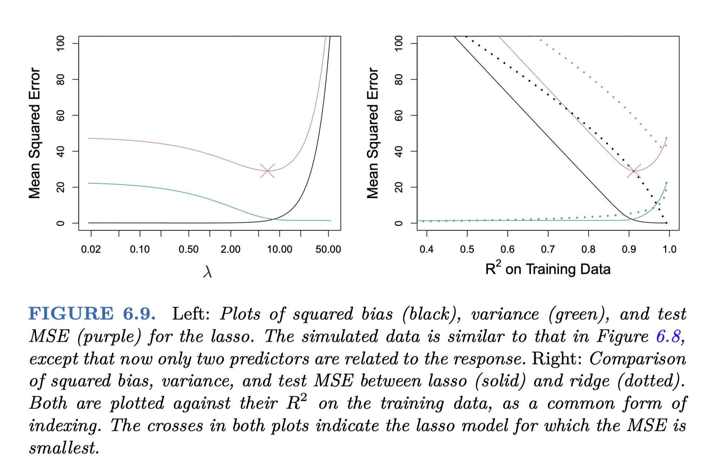
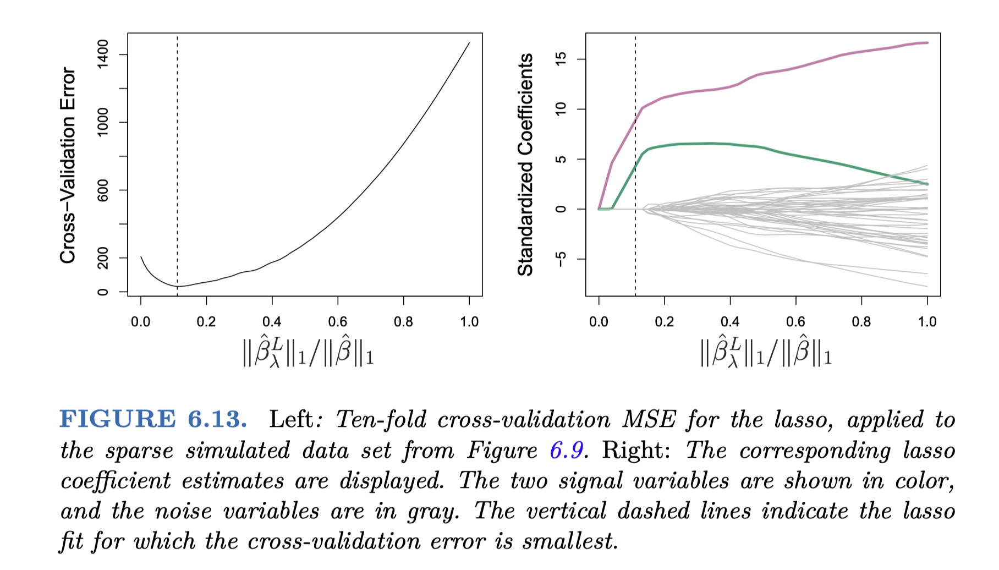

Load packages
# numerical calculation & data frames import numpy as npimport pandas as pd# visualization import matplotlib.pyplot as pltimport seaborn as snsimport seaborn.objects as so# statistics import statsmodels.api as sm# pandas options 'mode.copy_on_write' , True ) # pandas 2.0 = ' {:.2f} ' .format # pd.reset_option('display.float_format') = 7 # max number of rows to display # NumPy options = 2 , suppress= True ) # suppress scientific notation # For high resolution display import matplotlib_inline"retina" )
앞서 flexibility를 조정하기 위해 구체적으로 특정 모델을 선택했다면,
함수 \(h(x) = sin(2\pi x)\) 로부터 생성된 데이터셋(N=10)에 대해 다항식의 차수에 따른 flexibility의 변화에 따른 OLS 모델들을 비교하면,


Source: pp. 10-12, Deep Learning: Foundations and Concepts by Bishop, C. M. & Bishop, H
Shrinkage
예측변수에 대한 가정 혹은 변수를 선택을 하지 않고, 추정 계수가 너무 커지지 않도록 제약을 가하는 방법
이를 shrinkage/regularization이라고 하며,
variance를 줄이는 효과가 있음 즉, overfitting을 줄여, (미래 데이터의) test error를 줄이는 효과가 있음. 즉 예측의 정확도를 높임
제약의 방식에 따라 일부 계수는 정확히 0으로 추정될 수 있음
변수 선택(variable/feature selection)도 가능
모델의 해석(interpertability)이 용이해짐
Variance가 커지는 경우; overfitting
데이터에 비해 예측변수가 많을 때; \(n \gg p\)
Y와 실제 관련없는 변수들이 많을 때; 노이즈에 fitting
OLS estimation에서는 \(\displaystyle RSS = \sum_{i=1}^{n} e^2\) , \((e = y - \hat{y})\) 를 최소화시켰으나,shrinkage penalty 를 추가하여 최소화시키는 방법을 사용함.
Ridge regression (L2 regularization): \(\displaystyle \sum_{j=1}^{p} e^2 + \lambda\sum_{j=1}^{p} \beta_j^2\)
Lasso regression (L1 regularization): \(\displaystyle \sum_{j=1}^{p} e^2 + \lambda\sum_{j=1}^{p} |\beta_j|\)
Elastic net regression: ridge와 lasso regression을 결합
\(\lambda \geq 0\) 는 shrinkage penalty의 크기를 결정하는 tuning parameter(hyperparameter)
절편에 대해서는 shrinkage penalty를 적용하지 않음; 각 X와 Y간의 관계에 대해서만 shrink하길 기대
\(\lambda = 0\) 이면 OLS와 동일\(\lambda\) 가 커질 수록 penalty의 상대적 중요도가 높아져 파라미터의 크기가 줄어듦; \(\beta_j \rightarrow 0\) as \(\lambda \rightarrow \infty\) (null model)적절한 \(\lambda\) 를 찾기 위해 cross-validation을 사용함
OLS estimation에서 변수의 scaling에 대해서 그대로 변하는데 반해; \(X^{\prime} = c*X\) 일 때, \(\displaystyle\hat{\beta}^{\prime} = \frac{1}{c} \hat{\beta}\)
Ridge regression은 변수의 scaling에 매우 민감하며, 다른 변수들의 scale에도 영향을 받음
변수들을 표준화(standardization)하는 것이 필요함; \(\displaystyle\frac{X - \bar{X}}{s_X}\)
Ridge regression
\(\lambda\) 가 커질수록 \(\beta\) 의 \(l2\) norm은 항상 줄어듦
\(l2\) norm: \(\displaystyle ||\beta||_2 = \sqrt{\sum_{j=1}^{p} \beta_j^2}\) :(vector \((\beta_1, \beta_2, ..., \beta_p)\) 의 길이)

Source: p. 241, An Introduction to Statistical Learning by James, G., Witten, D., Hastie, T., & Tibshirani, R.
다음과 같이 이상적이지 못한 경우에 정규화를 통해 적절한 bias-variance trade-off를 찾을 수 있음.
p = 45 predictors, n = 50 observations
상대적으로 variance의 빠른 감소 효과 덕분에, ridge regression은 OLS보다 더 좋은 예측 성능을 보임
bias에 대한 약간의 손해를 보지만, variance에 대해서는 큰 이익을 얻어 정확한 예측(test error를 줄임) 가능
심지어, p > n인 경우에도 작동함
ridge regression은 OLS에서 variance가 높은 경우에 특히 유용함
파라미터가 작아지지만, 0이 되지는 않아, 모델의 해석이 용이하지는 않음
정규화 부분으로 인한 estimation에 대한 계산량의 증가 거의 없음; 매우 효율적

Source: p. 243, An Introduction to Statistical Learning by James, G., Witten, D., Hastie, T., & Tibshirani, R.
Lasso regression
\(\lambda\) 가 커질수록 \(\beta\) 의 \(l1\) norm은 항상 줄어듦
\(l1\) norm: \(\displaystyle ||\beta||_1 = \sum_{j=1}^{p} |\beta_j|\)
Ridge와는 달리 파라미터가 0이 될 수 있음: 변수 선택(variable/feature selection)이 가능함
\(\lambda\) 값에 따라, 임의의 갯수의 변수를 포함할 수 있음

Source: p. 245, An Introduction to Statistical Learning by James, G., Witten, D., Hastie, T., & Tibshirani, R.
Ridge와 마찬가지로 bias에 대한 약간의 손해를 보지만, variance에 대해서는 큰 이익을 얻어 정확한 예측(test error를 줄임) 가능
그림 6.5와 동일한 데이터셋(p = 45 predictors, n = 50 observations)
Source: p. 248, An Introduction to Statistical Learning by James, G., Witten, D., Hastie, T., & Tibshirani, R.
Ridge vs. Lasso
Ridge
모든 변수를 포함하여, 종종 파라미터를 해석하기 어려워짐
모든 예측변수들이 골고루 Y와 관련이 있을 때 높은 예측성능을 보임
즉, 예측변수들이 비슷한 효과를 가질 때
그림 6.8의 오른편에서 variance가 상대적으로 낮게 나타남
45개의 예측변수가 모두 Y와 관련되도록 생성된 데이터셋
모든 계수들이 비슷한 “비율”로 줄어듬
Lasso
일부 계수가 0이 되어 변수 선택이 가능하며, 따라서 해석이 용이해짐
예측변수들 중 일부만이 Y와 관련이 있을 때 높은 예측성능을 보임
즉, 상대적으로 소수의 예측변수들만이 큰 효과를 가질 때
그림 6.9의 오른편에서 bias가 크게 작으며, variance도 낮음; 즉 모든 면에서 더 좋은 성능을 보임
45개의 예측변수 중 2개만이 Y와 관련되도록 생성된 데이터셋
모든 계수들이 비슷한 “크기”로 줄어듬; 작은 계수들은 0이 될 수 있음

Source: p. 249, An Introduction to Statistical Learning by James, G., Witten, D., Hastie, T., & Tibshirani, R.
현실에서는 변수들 간의 true relationship을 미리 알 수 없으므로,\(\lambda\) 를 찾기 위해 cross-validation을 사용함

앞서 shrinkage 방식으로 variance을 감소시키는 방법을 다루었는데, 이외에도 다른 방법의 접근이 있음.
Subset Selection : 예측변수들 중 Y와 연관되어 있다고 생각되는 변수들을 선택
설명력이 높은 조합의 변수들을 걸러내는 여러 방법이 있음
어떤 기준으로 계산하느냐에 따라 결과가 달라질 수 있음
많은 계산량이 필요하며, 변수의 수가 많을 때는 적용하기 어려움
Best Subset Selection , Forward Stepwise Selection , Backward Stepwise Selection Dimension Reduction : 예측변수들의 선형 조합으로 새로운 변수들을 얻어(설명 변량의 큰 손실없이) 변수의 갯수를 줄이고자 함
Principal Component Analysis(PCA)
Partial Least Squares(PLS)
{kind=link}
{kind=link}
{kind=link}
{kind=link}
{kind=link}
{kind=link}
{kind=link}
{kind=link}